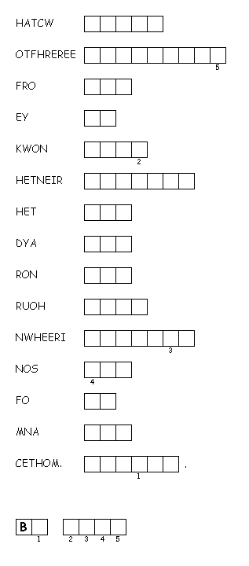

This week's lessons:Joshua 24:1-3a, 14-25 and Psalm 78:1-7 or Wisdom of Solomon 6:12-16 or Amos 5:18-24 or Wisdom of Solomon 6:17-20 or Psalm 70, 1 Thessalonians 4:13-18, Matthew 25:1-13
Middle-School Pew-work
|
 |
If you were a bridesmaid, waiting for a young bridegroom to bring one of your friends to start her new life as a wife, what kinds of thoughts would be going through your head? _____________________________________________________ In what ways are such bridesmaids serving their friend? _____________________________________________________ In what ways are such bridesmaids serving God? _____________________________________________________ |
Next week: Judges 4:1-7 and Psalm 123 or Zephaniah 1:7, 12-18 and Psalm 90:1-8, (9-11), 12, 1 Thessalonians 5:1-11 , Matthew 25:14-30
This week's lessons:Joshua 24:1-3a, 14-25 and Psalm 78:1-7 or Wisdom of Solomon 6:12-16 or Amos 5:18-24 or Wisdom of Solomon 6:17-20 or Psalm 70, 1 Thessalonians 4:13-18, Matthew 25:1-13
Elementary School Pew-work
U B S T H E R E F O R E W A S H M T B
|
Word List |
|
"Then the kingdom of heaven will be like this. Ten bridesmaids took their lamps and went to meet the bridegroom. Five of them were foolish, and five were wise. When the foolish took their lamps, they took no oil with them; but the wise took flasks of oil with their lamps. As the bridegroom was delayed, all of them became drowsy and slept. But at midnight there was a shout, 'Look! Here is the bridegroom! Come out to meet him.' Then all those bridesmaids got up and trimmed their lamps. The foolish said to the wise, 'Give us some of your oil, for our lamps are going out.' But the wise replied, 'No! there will not be enough for you and for us; you had better go to the dealers and buy some for yourselves.' And while they went to buy it, the bridegroom came, and those who were ready went with him into the wedding banquet; and the door was shut. Later the other bridesmaids came also, saying, 'Lord, lord, open to us.' But he replied, 'Truly I tell you, I do not know you.' Keep awake therefore, for you know neither the day nor the hour. from http://www.efree.mb.ca/lectionarypuzzles free to distribute for free with this notice. Words are in a straight line left to right or top to bottom |
|
1. What did the
foolish girls do to prepare for the
wedding?
__________________________________________________________________________
2. What did the wise
girls do to prepare for the
wedding?
__________________________________________________________________________
3. What did the
foolish girls have to
do?
__________________________________________________________________________
4. What happened when
the foolish girls came
back?
__________________________________________________________________________
Questions taken from Sunday School Lessons; http://www.sundayschoollessons.com/baplord.htm
Next week: Judges 4:1-7 and Psalm 123 or Zephaniah 1:7, 12-18 and Psalm 90:1-8, (9-11), 12, 1 Thessalonians 5:1-11 , Matthew 25:14-30